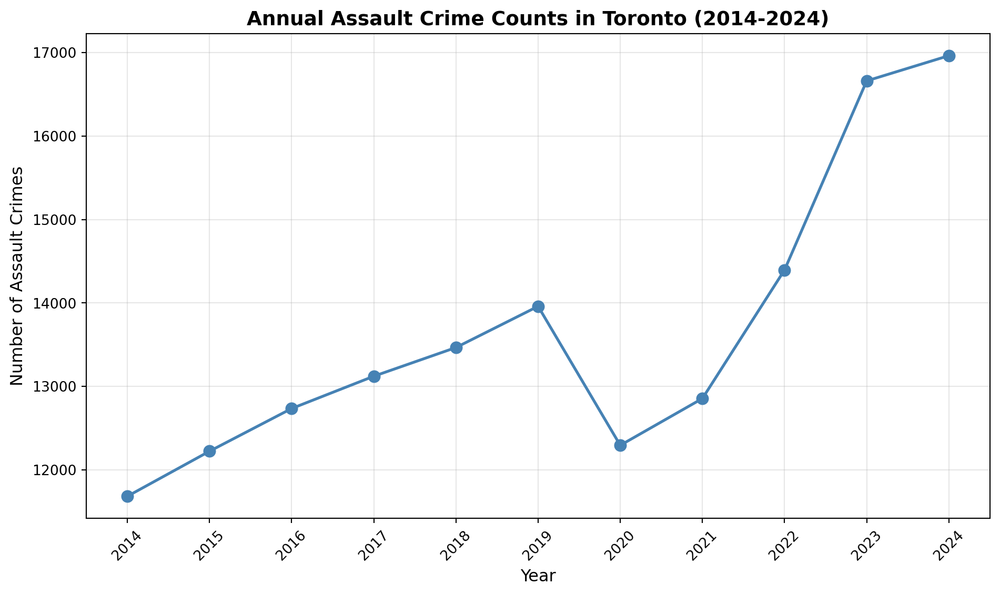
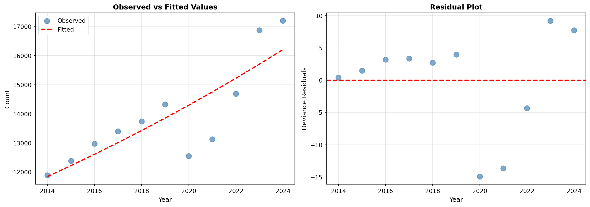
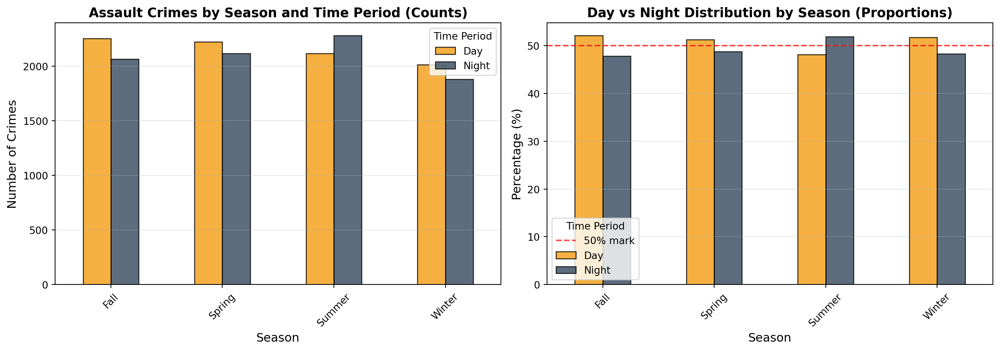

Primary Question
What are the most numerous categories of crimes and offences in Toronto? Of these, when and where are they most likely to occur?
JSC370 (Winter 2026)
What are the most numerous categories of crimes and offences in Toronto? Of these, when and where are they most likely to occur?
import pandas as pd
import numpy as np
import matplotlib.pyplot as plt
import statsmodels.api as sm
import statsmodels.formula.api as smf
from scipy.stats import chisquare, chi2_contingency
import folium# Read and load only the needed columns
data_path = "Major_Crime_Indicators_Open_Data_-3805566126367379926.csv"
# Focus on the following variables:
key_vars = [
"MCI_CATEGORY",
"OFFENCE",
"OCC_YEAR",
"OCC_MONTH",
"OCC_DAY",
"OCC_DOY",
"OCC_HOUR",
"LOCATION_TYPE",
"NEIGHBOURHOOD_158",
"LONG_WGS84",
"LAT_WGS84",
]
raw = pd.read_csv(data_path, usecols=key_vars)
# Quick look at the data
df = raw.copy()
df.head()| OCC_YEAR | OCC_MONTH | OCC_DAY | OCC_DOY | OCC_HOUR | LOCATION_TYPE | OFFENCE | MCI_CATEGORY | NEIGHBOURHOOD_158 | LONG_WGS84 | LAT_WGS84 | |
|---|---|---|---|---|---|---|---|---|---|---|---|
| 0 | 2014.0 | January | 1.0 | 1.0 | 4 | Apartment (Rooming House, Condo) | Assault | Assault | Downsview (155) | -79.483869 | 43.734369 |
| 1 | 2014.0 | January | 1.0 | 1.0 | 8 | Commercial Dwelling Unit (Hotel, Motel, B & B,... | Assault With Weapon | Assault | Oakdale-Beverley Heights (154) | -79.513772 | 43.719813 |
| 2 | 2014.0 | January | 1.0 | 1.0 | 12 | Single Home, House (Attach Garage, Cottage, Mo... | Assault Bodily Harm | Assault | North Riverdale (68) | -79.357562 | 43.674791 |
| 3 | 2014.0 | January | 1.0 | 1.0 | 13 | Retirement Home | Assault | Assault | Wychwood (94) | -79.422371 | 43.673842 |
| 4 | 2014.0 | January | 1.0 | 1.0 | 11 | Apartment (Rooming House, Condo) | Assault | Assault | Clairlea-Birchmount (120) | -79.286725 | 43.700100 |
# Check dimensions and memory
print("shape:", df.shape)
print("n_rows:", df.shape[0])
print("n_cols:", df.shape[1])
# Check memory usage in GB
df.memory_usage(deep=True).sum() / 1024**3shape: (452949, 11)
n_rows: 452949
n_cols: 11np.float64(0.16353116929531097)# Check variable information
df.info()<class 'pandas.core.frame.DataFrame'>
RangeIndex: 452949 entries, 0 to 452948
Data columns (total 11 columns):
# Column Non-Null Count Dtype
--- ------ -------------- -----
0 OCC_YEAR 452798 non-null float64
1 OCC_MONTH 452798 non-null object
2 OCC_DAY 452798 non-null float64
3 OCC_DOY 452798 non-null float64
4 OCC_HOUR 452949 non-null int64
5 LOCATION_TYPE 452949 non-null object
6 OFFENCE 452949 non-null object
7 MCI_CATEGORY 452949 non-null object
8 NEIGHBOURHOOD_158 452949 non-null object
9 LONG_WGS84 452949 non-null float64
10 LAT_WGS84 452949 non-null float64
dtypes: float64(5), int64(1), object(5)
memory usage: 38.0+ MB# Standardize missing-value placeholders across all columns
missing_markers = ["", " ", "N/A", "NA", "null", "Null"]
df = df.replace(missing_markers, np.nan)
# Missing data summary
missing = df.isna().sum().to_frame("n_missing")
missing["pct_missing"] = (missing["n_missing"] / len(df)).round(4)
display(missing.sort_values("pct_missing", ascending=False))| n_missing | pct_missing | |
|---|---|---|
| OCC_YEAR | 151 | 0.0003 |
| OCC_MONTH | 151 | 0.0003 |
| OCC_DAY | 151 | 0.0003 |
| OCC_DOY | 151 | 0.0003 |
| OCC_HOUR | 0 | 0.0000 |
| LOCATION_TYPE | 0 | 0.0000 |
| OFFENCE | 0 | 0.0000 |
| MCI_CATEGORY | 0 | 0.0000 |
| NEIGHBOURHOOD_158 | 0 | 0.0000 |
| LONG_WGS84 | 0 | 0.0000 |
| LAT_WGS84 | 0 | 0.0000 |
Summary:
pd.read_csv(..., usecols=key_vars) to load only the 11 variables required for this homework: MCI_CATEGORY, OFFENCE, OCC_YEAR, OCC_MONTH, OCC_DAY, OCC_DOY, OCC_HOUR, LOCATION_TYPE, NEIGHBOURHOOD_158, LONG_WGS84, LAT_WGS84. Then make a copy of the dataframe for further analysis/preprocessing.df.info()): int64: OCC_HOUR. float64: OCC_YEAR, OCC_DAY, OCC_DOY, LONG_WGS84, LAT_WGS84 (the date fields are float64). object: OCC_MONTH, LOCATION_TYPE, OFFENCE, MCI_CATEGORY, NEIGHBOURHOOD_158."", " ", "N/A", "NA", "null", "Null") to NaN. The only missing values among these 11 variables are 151 rows with missing values in OCC_YEAR, OCC_MONTH, OCC_DAY, and OCC_DOY (each has 151 missing); the other variables have no missing values.# Identify the most frequent MCI category
cat_counts = df["MCI_CATEGORY"].value_counts(dropna=False)
display(cat_counts.head(10))
top_category = cat_counts.index[0]
print("Most frequent MCI_CATEGORY:", top_category)
# Within that category, identify the most frequent offence
off_counts = (
df.loc[df["MCI_CATEGORY"] == top_category, "OFFENCE"]
.value_counts(dropna=False)
)
display(off_counts.head(10))
top_offence = off_counts.index[0]
print("Most frequent OFFENCE within category:", top_offence)MCI_CATEGORY
Assault 242671
Break and Enter 81551
Auto Theft 73739
Robbery 39117
Theft Over 15871
Name: count, dtype: int64Most frequent MCI_CATEGORY: AssaultOFFENCE
Assault 166524
Assault With Weapon 41658
Assault Bodily Harm 10456
Assault Peace Officer 7859
Assault - Resist/ Prevent Seiz 3804
Aggravated Assault 3217
Discharge Firearm With Intent 2735
Discharge Firearm - Recklessly 1941
Pointing A Firearm 1643
Assault Peace Officer Wpn/Cbh 880
Name: count, dtype: int64Most frequent OFFENCE within category: Assault# Create analytic dataset for the selected category/offence
crime = df.loc[
(df["MCI_CATEGORY"] == top_category) & (df["OFFENCE"] == top_offence),
key_vars,
].copy()
print("Analytic dataset shape:", crime.shape)Analytic dataset shape: (166524, 11)# Rename key variables for readability
crime = crime.rename(
columns={
"MCI_CATEGORY": "category",
"OFFENCE": "offence",
"OCC_YEAR": "occurrence_year",
"OCC_MONTH": "occurrence_month",
"OCC_DAY": "occurrence_day",
"OCC_DOY": "day_of_year",
"OCC_HOUR": "hour",
"LOCATION_TYPE": "location_type",
"NEIGHBOURHOOD_158": "neighbourhood",
"LONG_WGS84": "lon",
"LAT_WGS84": "lat",
}
)
# Convert time variables to numeric
crime["occurrence_year"] = pd.to_numeric(crime["occurrence_year"], errors="coerce").astype("Int64")
crime["occurrence_day"] = pd.to_numeric(crime["occurrence_day"], errors="coerce").astype("Int64")
crime["day_of_year"] = pd.to_numeric(crime["day_of_year"], errors="coerce").astype("Int64")
# OCC_MONTH is stored as month names; map to month numbers
month_map = {
"January": 1, "February": 2, "March": 3, "April": 4,
"May": 5, "June": 6, "July": 7, "August": 8,
"September": 9, "October": 10, "November": 11, "December": 12,
}
crime["occurrence_month"] = (
pd.to_numeric(crime["occurrence_month"], errors="coerce")
.fillna(crime["occurrence_month"].map(month_map))
.astype("Int64")
)
# Convert strings to categorical
for col in ["category", "offence", "location_type", "neighbourhood"]:
crime[col] = crime[col].astype("category")
crime.info()
display(crime.head())<class 'pandas.core.frame.DataFrame'>
Index: 166524 entries, 0 to 452948
Data columns (total 11 columns):
# Column Non-Null Count Dtype
--- ------ -------------- -----
0 category 166524 non-null category
1 offence 166524 non-null category
2 occurrence_year 166440 non-null Int64
3 occurrence_month 166440 non-null Int64
4 occurrence_day 166440 non-null Int64
5 day_of_year 166440 non-null Int64
6 hour 166524 non-null int64
7 location_type 166524 non-null category
8 neighbourhood 166524 non-null category
9 lon 166524 non-null float64
10 lat 166524 non-null float64
dtypes: Int64(4), category(4), float64(2), int64(1)
memory usage: 11.6 MB| category | offence | occurrence_year | occurrence_month | occurrence_day | day_of_year | hour | location_type | neighbourhood | lon | lat | |
|---|---|---|---|---|---|---|---|---|---|---|---|
| 0 | Assault | Assault | 2014 | 1 | 1 | 1 | 4 | Apartment (Rooming House, Condo) | Downsview (155) | -79.483869 | 43.734369 |
| 3 | Assault | Assault | 2014 | 1 | 1 | 1 | 13 | Retirement Home | Wychwood (94) | -79.422371 | 43.673842 |
| 4 | Assault | Assault | 2014 | 1 | 1 | 1 | 11 | Apartment (Rooming House, Condo) | Clairlea-Birchmount (120) | -79.286725 | 43.700100 |
| 8 | Assault | Assault | 2014 | 1 | 1 | 1 | 20 | Single Home, House (Attach Garage, Cottage, Mo... | Yonge-Eglinton (100) | -79.400083 | 43.705466 |
| 9 | Assault | Assault | 2014 | 1 | 1 | 1 | 20 | Single Home, House (Attach Garage, Cottage, Mo... | Yonge-Eglinton (100) | -79.400083 | 43.705466 |
# Clean impossible data
# - Coordinates (0,0) indicate NSA/outside Toronto
# Check for (0,0) coordinates
zero_coords = (crime["lon"] == 0) & (crime["lat"] == 0)
print("\nSample of (0,0) coordinate records:")
display(crime.loc[zero_coords, ["neighbourhood", "lon", "lat"]].head(10))
# Set (0,0) coordinates to NaN
crime.loc[zero_coords, ["lon", "lat"]] = np.nan
# Missing data summary after coordinate cleaning
missing = crime.isna().sum().to_frame("n_missing")
missing["pct_missing"] = (missing["n_missing"] / len(crime)).round(4)
display(missing.sort_values("pct_missing", ascending=False))
Sample of (0,0) coordinate records:| neighbourhood | lon | lat | |
|---|---|---|---|
| 81 | NSA | 0.0 | 0.0 |
| 294 | NSA | 0.0 | 0.0 |
| 333 | NSA | 0.0 | 0.0 |
| 347 | NSA | 0.0 | 0.0 |
| 403 | NSA | 0.0 | 0.0 |
| 571 | NSA | 0.0 | 0.0 |
| 780 | NSA | 0.0 | 0.0 |
| 781 | NSA | 0.0 | 0.0 |
| 828 | NSA | 0.0 | 0.0 |
| 879 | NSA | 0.0 | 0.0 |
| n_missing | pct_missing | |
|---|---|---|
| lon | 2864 | 0.0172 |
| lat | 2864 | 0.0172 |
| occurrence_year | 84 | 0.0005 |
| occurrence_month | 84 | 0.0005 |
| occurrence_day | 84 | 0.0005 |
| day_of_year | 84 | 0.0005 |
| category | 0 | 0.0000 |
| offence | 0 | 0.0000 |
| hour | 0 | 0.0000 |
| location_type | 0 | 0.0000 |
| neighbourhood | 0 | 0.0000 |
value_counts) on MCI_CATEGORY to pick the most common category in the full dataset, then (within that category) used frequency counts on OFFENCE to pick the most common offence. Using this rule, the selected category is Assault and the selected offence is Assault.key_vars). This produced the analytic dataset crime with 166,524 rows and 11 columns.Int64), mapping month names to numbers (1–12). I also converted category, offence, location_type, and neighbourhood to pandas category type to reflect that they are nominal labels.lon and lat to NaN for those rows. After cleaning, lon and lat each have 2,864 missing values ((0.0172 %) of crime).# Check which years are present in the crime dataset
year_counts = crime["occurrence_year"].value_counts(dropna=False).sort_index()
print("Years present in crime dataset:")
display(year_counts)
# Check for missing years
print(f"\nYear range: {crime['occurrence_year'].min()} to {crime['occurrence_year'].max()}")
print(f"Missing values in occurrence_year: {crime['occurrence_year'].isna().sum()}")Years present in crime dataset:occurrence_year
2000 20
2001 16
2002 15
2003 19
2004 28
2005 27
2006 16
2007 25
2008 36
2009 56
2010 74
2011 90
2012 144
2013 314
2014 11889
2015 12387
2016 12972
2017 13397
2018 13744
2019 14327
2020 12549
2021 13125
2022 14694
2023 16878
2024 17204
2025 12394
<NA> 84
Name: count, dtype: Int64
Year range: 2000 to 2025
Missing values in occurrence_year: 84# Documentation (Appendix A): MCI Assault data covers 2014 – 2025.09.30 (quarterly updates)
valid_start_year = 2014
valid_end_year = 2025
assault_valid = crime[
crime["occurrence_year"].between(valid_start_year, valid_end_year, inclusive="both")
].copy()
print(f"Documentation: MCI Assault data covers {valid_start_year} – {valid_end_year}.09.30")
print(f"\nOriginal dataset: {len(crime):,} rows")
print(f"\nAfter filtering to valid range ({valid_start_year}-{valid_end_year}): {len(assault_valid):,} rows")Documentation: MCI Assault data covers 2014 – 2025.09.30
Original dataset: 166,524 rows
After filtering to valid range (2014-2025): 165,560 rows# Check completeness: months present and date range for each year
year_completeness = assault_valid.groupby("occurrence_year").agg(
n_records=("occurrence_year", "count"),
n_months=("occurrence_month", "nunique"),
min_month=("occurrence_month", "min"),
max_month=("occurrence_month", "max"),
min_doy=("day_of_year", "min"),
max_doy=("day_of_year", "max"),
).reset_index()
# Add completeness indicator
year_completeness["complete"] = year_completeness["n_months"] == 12
print("Year completeness summary:")
display(year_completeness)Year completeness summary:| occurrence_year | n_records | n_months | min_month | max_month | min_doy | max_doy | complete | |
|---|---|---|---|---|---|---|---|---|
| 0 | 2014 | 11889 | 12 | 1 | 12 | 1 | 365 | True |
| 1 | 2015 | 12387 | 12 | 1 | 12 | 1 | 365 | True |
| 2 | 2016 | 12972 | 12 | 1 | 12 | 1 | 366 | True |
| 3 | 2017 | 13397 | 12 | 1 | 12 | 1 | 365 | True |
| 4 | 2018 | 13744 | 12 | 1 | 12 | 1 | 365 | True |
| 5 | 2019 | 14327 | 12 | 1 | 12 | 1 | 365 | True |
| 6 | 2020 | 12549 | 12 | 1 | 12 | 1 | 366 | True |
| 7 | 2021 | 13125 | 12 | 1 | 12 | 1 | 365 | True |
| 8 | 2022 | 14694 | 12 | 1 | 12 | 1 | 365 | True |
| 9 | 2023 | 16878 | 12 | 1 | 12 | 1 | 365 | True |
| 10 | 2024 | 17204 | 12 | 1 | 12 | 1 | 366 | True |
| 11 | 2025 | 12394 | 9 | 1 | 9 | 1 | 273 | False |
# Based on examination above, identify complete years (those with all 12 months)
complete_years = year_completeness[year_completeness["complete"]]["occurrence_year"].values
print(f"Complete years (all 12 months present): {complete_years.tolist()}")
# Subset to complete years only
assault_complete = assault_valid[assault_valid["occurrence_year"].isin(complete_years)].copy()
print(f"\nValid range dataset: {len(assault_valid):,} rows")
print(f"After subsetting to complete years: {len(assault_complete):,} rows")Complete years (all 12 months present): [2014, 2015, 2016, 2017, 2018, 2019, 2020, 2021, 2022, 2023, 2024]
Valid range dataset: 165,560 rows
After subsetting to complete years: 153,166 rows# Aggregate to count of crimes per year
annual_counts = (
assault_complete.groupby("occurrence_year")
.size()
.reset_index(name="count")
)
print("Annual crime counts:")
display(annual_counts)Annual crime counts:| occurrence_year | count | |
|---|---|---|
| 0 | 2014 | 11889 |
| 1 | 2015 | 12387 |
| 2 | 2016 | 12972 |
| 3 | 2017 | 13397 |
| 4 | 2018 | 13744 |
| 5 | 2019 | 14327 |
| 6 | 2020 | 12549 |
| 7 | 2021 | 13125 |
| 8 | 2022 | 14694 |
| 9 | 2023 | 16878 |
| 10 | 2024 | 17204 |
# Plot annual counts over time
fig, ax = plt.subplots(figsize=(10, 6))
ax.plot(annual_counts["occurrence_year"], annual_counts["count"],
marker='o', linewidth=2, markersize=8, color='steelblue')
ax.set_xlabel("Year", fontsize=12)
ax.set_ylabel("Number of Assault Crimes", fontsize=12)
ax.set_title("Annual Assault Crime Counts in Toronto (2014-2024)", fontsize=14, fontweight='bold')
ax.grid(True, alpha=0.3)
ax.set_xticks(annual_counts["occurrence_year"])
ax.tick_params(axis='x', rotation=45)
plt.tight_layout()
plt.show()
# Fit Poisson regression: count ~ year (as numeric)
# y = annual crime count, x = year (numeric)
poisson_model = smf.glm(
formula="count ~ occurrence_year",
data=annual_counts,
family=sm.families.Poisson()
).fit()
print("Poisson Regression Results:")
print(poisson_model.summary())
# Extract coefficient for year
year_coef = poisson_model.params["occurrence_year"]
year_se = poisson_model.bse["occurrence_year"]
year_pvalue = poisson_model.pvalues["occurrence_year"]
# Calculate rate ratio per 1-year increase
rate_ratio = np.exp(year_coef)
rate_ratio_ci = np.exp([
year_coef - 1.96 * year_se,
year_coef + 1.96 * year_se
])
print(f"\n--- Annual Trend Estimate ---")
print(f"Coefficient (log rate ratio per year): {year_coef:.6f}")
print(f"Rate ratio per 1-year increase: {rate_ratio:.4f}")
print(f"95% CI for rate ratio: ({rate_ratio_ci[0]:.4f}, {rate_ratio_ci[1]:.4f})")
# Calculate percent change for interpretation
pct_change = (rate_ratio - 1) * 100
print(f"Percent change per year: {pct_change:+.2f}%")Poisson Regression Results:
Generalized Linear Model Regression Results
==============================================================================
Dep. Variable: count No. Observations: 11
Model: GLM Df Residuals: 9
Model Family: Poisson Df Model: 1
Link Function: Log Scale: 1.0000
Method: IRLS Log-Likelihood: -372.70
Date: Sun, 01 Feb 2026 Deviance: 620.30
Time: 14:42:47 Pearson chi2: 608.
No. Iterations: 4 Pseudo R-squ. (CS): 1.000
Covariance Type: nonrobust
===================================================================================
coef std err z P>|z| [0.025 0.975]
-----------------------------------------------------------------------------------
Intercept -53.8177 1.637 -32.885 0.000 -57.025 -50.610
occurrence_year 0.0314 0.001 38.718 0.000 0.030 0.033
===================================================================================
--- Annual Trend Estimate ---
Coefficient (log rate ratio per year): 0.031379
Rate ratio per 1-year increase: 1.0319
95% CI for rate ratio: (1.0302, 1.0335)
Percent change per year: +3.19%Interpretation: For each 1-year increase from 2014 to 2024, the expected annual assault crime count increases by approximately 3.19%, suggesting a statistically significant upward trend in assault crimes over this period.
# Check model fit: compare observed vs fitted values
annual_counts["fitted"] = poisson_model.fittedvalues
annual_counts["residuals"] = poisson_model.resid_deviance
# Plot observed vs fitted
fig, axes = plt.subplots(1, 2, figsize=(14, 5))
# Observed vs Fitted
axes[0].scatter(annual_counts["occurrence_year"], annual_counts["count"],
label="Observed", s=80, alpha=0.7, color='steelblue')
axes[0].plot(annual_counts["occurrence_year"], annual_counts["fitted"],
label="Fitted", linewidth=2, color='red', linestyle='--')
axes[0].set_xlabel("Year", fontsize=11)
axes[0].set_ylabel("Count", fontsize=11)
axes[0].set_title("Observed vs Fitted Values", fontsize=12, fontweight='bold')
axes[0].legend()
axes[0].grid(True, alpha=0.3)
# Residual plot
axes[1].scatter(annual_counts["occurrence_year"], annual_counts["residuals"],
s=80, alpha=0.7, color='steelblue')
axes[1].axhline(0, color='red', linestyle='--', linewidth=2)
axes[1].set_xlabel("Year", fontsize=11)
axes[1].set_ylabel("Deviance Residuals", fontsize=11)
axes[1].set_title("Residual Plot", fontsize=12, fontweight='bold')
axes[1].grid(True, alpha=0.3)
plt.tight_layout()
plt.show()
# Goodness of fit: deviance and Pearson chi-squared
print("\n--- Model Fit Statistics ---")
print(f"Deviance: {poisson_model.deviance:.2f}")
print(f"Pearson chi-squared: {poisson_model.pearson_chi2:.2f}")
print(f"Degrees of freedom: {poisson_model.df_resid}")
# Check for overdispersion
dispersion = poisson_model.pearson_chi2 / poisson_model.df_resid
print(f"\nDispersion parameter (Pearson χ²/df): {dispersion:.4f}")
--- Model Fit Statistics ---
Deviance: 620.30
Pearson chi-squared: 607.53
Degrees of freedom: 9
Dispersion parameter (Pearson χ²/df): 67.5038Comments on Model Fit and Assumptions:
The Poisson model captures the overall upward trend, though the residual plot shows systematic deviations (notably around 2021). The dispersion parameter (≈67.5) indicates overdispersion as it is significantly greater than the threshold 1.5, violating the Poisson assumption (variance = mean) and making standard errors unreliable.
Yes, there is statistically significant evidence of an upward trend in assault crimes across Toronto from 2014 to 2024, with the Poisson regression estimating approximately a 3.19% annual increase in expected crime counts (rate ratio ≈ 1.03). However, the model exhibits severe overdispersion, suggesting that while the overall increasing trend is present, the simple Poisson model may underestimate the uncertainty in this estimate， which means the model results may not be reliable.
most_recent_year = assault_complete["occurrence_year"].max()
print(f"Most recent complete year: {most_recent_year}")
# Subset to that year
assault_recent = assault_complete[assault_complete["occurrence_year"] == most_recent_year].copy()
print(f"Records in {most_recent_year}: {len(assault_recent):,}")Most recent complete year: 2024
Records in 2024: 17,204# Define seasons based on month
def get_season(month):
if month in [12, 1, 2]:
return "Winter"
elif month in [3, 4, 5]:
return "Spring"
elif month in [6, 7, 8]:
return "Summer"
elif month in [9, 10, 11]:
return "Fall"
else:
return None
assault_recent["season"] = assault_recent["occurrence_month"].apply(get_season)
print("Season distribution:")
print(assault_recent["season"].value_counts().sort_index())Season distribution:
season
Fall 4394
Spring 4393
Summer 4470
Winter 3947
Name: count, dtype: int64# Count by season
season_counts = assault_recent["season"].value_counts().sort_index()
season_summary = season_counts.to_frame("count").reset_index()
season_summary.columns = ["season", "count"]
season_summary["percentage"] = (season_summary["count"] / season_summary["count"].sum() * 100).round(2)
print(f"Summary statistics by season ({most_recent_year}):")
display(season_summary)Summary statistics by season (2024):| season | count | percentage | |
|---|---|---|---|
| 0 | Fall | 4394 | 25.54 |
| 1 | Spring | 4393 | 25.53 |
| 2 | Summer | 4470 | 25.98 |
| 3 | Winter | 3947 | 22.94 |
# Bar plot of counts by season
fig, ax = plt.subplots(figsize=(10, 6))
colors = ['#3498db', '#2ecc71', '#e74c3c', '#f39c12']
bars = ax.bar(season_summary["season"], season_summary["count"], color=colors, alpha=0.8, edgecolor='black')
# Add value labels on bars
for bar in bars:
height = bar.get_height()
ax.text(bar.get_x() + bar.get_width()/2., height,
f'{int(height):,}',
ha='center', va='bottom', fontsize=11, fontweight='bold')
ax.set_xlabel("Season", fontsize=12)
ax.set_ylabel("Number of Assault Crimes", fontsize=12)
ax.set_title(f"Assault Crime Counts by Season ({most_recent_year})", fontsize=14, fontweight='bold')
ax.grid(axis='y', alpha=0.3)
plt.tight_layout()
plt.show()
# Observed counts
observed = season_summary["count"].values
# Expected counts (uniform distribution across 4 seasons)
expected = np.full(4, observed.sum() / 4)
# Chi-square test
chi2_stat, p_value = chisquare(f_obs=observed, f_exp=expected)
print("Chi-square test for seasonal differences:")
print(f" Null hypothesis: Assault crimes are uniformly distributed across seasons")
print(f" Chi-square statistic: {chi2_stat:.2f}")
print(f" P-value: {p_value:.4e}")
print(f" Degrees of freedom: {len(observed) - 1}")
# Calculate residuals to identify which seasons differ from expected
season_summary["expected"] = expected
season_summary["residual"] = observed - expected
season_summary["standardized_residual"] = (observed - expected) / np.sqrt(expected)
print("\nSeason-specific deviations from expected:")
display(season_summary[["season", "count", "expected", "residual", "standardized_residual"]])Chi-square test for seasonal differences:
Null hypothesis: Assault crimes are uniformly distributed across seasons
Chi-square statistic: 39.76
P-value: 1.2003e-08
Degrees of freedom: 3
Season-specific deviations from expected:| season | count | expected | residual | standardized_residual | |
|---|---|---|---|---|---|
| 0 | Fall | 4394 | 4301.0 | 93.0 | 1.418072 |
| 1 | Spring | 4393 | 4301.0 | 92.0 | 1.402824 |
| 2 | Summer | 4470 | 4301.0 | 169.0 | 2.576926 |
| 3 | Winter | 3947 | 4301.0 | -354.0 | -5.397822 |
Interpretation: The chi-square test shows strong evidence against the null hypothesis of uniform distribution (χ² = 39.76, p < 0.05), indicating significant seasonal variation in assault crimes in 2024. Note, with standardized residuals exceeding the threshold of \(|2|\), it is evident that Summer has notably higher counts than expected, while Winter has lower counts than expected.
# Count crimes by hour
hour_counts = assault_recent["hour"].value_counts().sort_index()
print("Crime counts by hour:")
display(hour_counts.to_frame("count"))Crime counts by hour:| count | |
|---|---|
| hour | |
| 0 | 1217 |
| 1 | 565 |
| 2 | 511 |
| 3 | 420 |
| 4 | 271 |
| 5 | 237 |
| 6 | 219 |
| 7 | 342 |
| 8 | 526 |
| 9 | 646 |
| 10 | 691 |
| 11 | 761 |
| 12 | 1075 |
| 13 | 800 |
| 14 | 806 |
| 15 | 1019 |
| 16 | 934 |
| 17 | 906 |
| 18 | 932 |
| 19 | 849 |
| 20 | 912 |
| 21 | 901 |
| 22 | 861 |
| 23 | 803 |
Day/Night Definition: - Day: 6:00 AM to 5:59 PM (hours 6-17) - Night: 6:00 PM to 5:59 AM (hours 18-23, 0-5)
def get_time_period(hour):
if 6 <= hour <= 17:
return "Day"
else:
return "Night"
assault_recent["time_period"] = assault_recent["hour"].apply(get_time_period)
# Check distribution
print("Day/Night distribution:")
print(assault_recent["time_period"].value_counts())Day/Night distribution:
time_period
Day 8725
Night 8479
Name: count, dtype: int64# Create contingency table
contingency_table = pd.crosstab(
assault_recent["season"],
assault_recent["time_period"],
margins=True
)
print("Season × Day/Night Contingency Table:")
display(contingency_table)
# Calculate proportions within each season (row percentages)
contingency_pct = pd.crosstab(
assault_recent["season"],
assault_recent["time_period"],
normalize="index"
) * 100
print("\nPercentage of Day/Night within each season:")
display(contingency_pct.round(2))Season × Day/Night Contingency Table:| time_period | Day | Night | All |
|---|---|---|---|
| season | |||
| Fall | 2285 | 2109 | 4394 |
| Spring | 2251 | 2142 | 4393 |
| Summer | 2150 | 2320 | 4470 |
| Winter | 2039 | 1908 | 3947 |
| All | 8725 | 8479 | 17204 |
Percentage of Day/Night within each season:| time_period | Day | Night |
|---|---|---|
| season | ||
| Fall | 52.00 | 48.00 |
| Spring | 51.24 | 48.76 |
| Summer | 48.10 | 51.90 |
| Winter | 51.66 | 48.34 |
# Prepare data for grouped bar chart
contingency_plot = pd.crosstab(
assault_recent["season"],
assault_recent["time_period"]
)
# Create grouped bar chart
fig, axes = plt.subplots(1, 2, figsize=(14, 5))
# Subplot 1: Counts
contingency_plot.plot(kind='bar', ax=axes[0], color=['#f39c12', '#34495e'], alpha=0.8, edgecolor='black')
axes[0].set_xlabel("Season", fontsize=12)
axes[0].set_ylabel("Number of Crimes", fontsize=12)
axes[0].set_title("Assault Crimes by Season and Time Period (Counts)", fontsize=13, fontweight='bold')
axes[0].legend(title="Time Period", fontsize=10)
axes[0].grid(axis='y', alpha=0.3)
axes[0].tick_params(axis='x', rotation=45)
# Subplot 2: Proportions
contingency_pct.plot(kind='bar', ax=axes[1], color=['#f39c12', '#34495e'], alpha=0.8, edgecolor='black')
axes[1].set_xlabel("Season", fontsize=12)
axes[1].set_ylabel("Percentage (%)", fontsize=12)
axes[1].set_title("Day vs Night Distribution by Season (Proportions)", fontsize=13, fontweight='bold')
axes[1].grid(axis='y', alpha=0.3)
axes[1].tick_params(axis='x', rotation=45)
axes[1].axhline(50, color='red', linestyle='--', linewidth=1.5, alpha=0.7, label='50% mark')
axes[1].legend(title="Time Period", fontsize=10)
plt.tight_layout()
plt.show()
# Perform chi-square test of independence
contingency_test = pd.crosstab(
assault_recent["season"],
assault_recent["time_period"]
)
chi2_stat, p_value, dof, expected = chi2_contingency(contingency_test)
print("Chi-square test for independence (Season × Day/Night):")
print(f" Null hypothesis: Day/night proportions are independent of season")
print(f" Chi-square statistic: {chi2_stat:.2f}")
print(f" P-value: {p_value:.4e}")
print(f" Degrees of freedom: {dof}")
# Calculate standardized residuals to identify which cells contribute most
observed = contingency_test.values
std_residuals = (observed - expected) / np.sqrt(expected)
# Create dataframe with standardized residuals
std_resid_df = pd.DataFrame(
std_residuals,
index=contingency_test.index,
columns=contingency_test.columns
)
print("\nStandardized residuals (Season × Day/Night):")
display(std_resid_df.round(2))Chi-square test for independence (Season × Day/Night):
Null hypothesis: Day/night proportions are independent of season
Chi-square statistic: 17.05
P-value: 6.8914e-04
Degrees of freedom: 3
Standardized residuals (Season × Day/Night):| time_period | Day | Night |
|---|---|---|
| season | ||
| Fall | 1.20 | -1.22 |
| Spring | 0.49 | -0.50 |
| Summer | -2.46 | 2.49 |
| Winter | 0.83 | -0.85 |
Interpretation:
I used a chi-square test of independence on the season × day/night contingency table to test whether the proportion of day vs night crimes is the same across seasons (null hypothesis: independent). Since p < 0.05, we reject the null. So yes, it is evident that the day/night distribution differs by season.
Then I used standardized residuals (\(|residual| > 2\)) to identify which season/time cells differ most from the expected counts under independence.
Therefore, Summer looks most different, with fewer Day crimes than expected and more Night crimes than expected (standardized residuals: Day = −2.46, Night = +2.49).
# Total count by neighbourhood
neighbourhood_total = assault_recent.groupby("neighbourhood", observed=True).size().reset_index(name="total_count")
# Day/Night counts by neighbourhood
neighbourhood_day_night = assault_recent.groupby(["neighbourhood", "time_period"], observed=True).size().unstack(fill_value=0)
neighbourhood_day_night = neighbourhood_day_night.reset_index()
neighbourhood_day_night.columns = ["neighbourhood", "day_count", "night_count"]
# Merge and calculate night proportion
neighbourhood_summary = neighbourhood_total.merge(neighbourhood_day_night, on="neighbourhood")
neighbourhood_summary["night_proportion"] = (
neighbourhood_summary["night_count"] / neighbourhood_summary["total_count"]
).round(4)
print(f"Total neighbourhoods: {len(neighbourhood_summary)}")
print(f"\nTop 10 neighbourhoods by total crime count:")
display(neighbourhood_summary.nlargest(10, "total_count").reset_index(drop=True))Total neighbourhoods: 159
Top 10 neighbourhoods by total crime count:| neighbourhood | total_count | day_count | night_count | night_proportion | |
|---|---|---|---|---|---|
| 0 | Mimico-Queensway (160) | 560 | 464 | 96 | 0.1714 |
| 1 | Downtown Yonge East (168) | 401 | 200 | 201 | 0.5012 |
| 2 | St Lawrence-East Bayfront-The Islands (166) | 366 | 158 | 208 | 0.5683 |
| 3 | Yonge-Bay Corridor (170) | 358 | 190 | 168 | 0.4693 |
| 4 | Moss Park (73) | 334 | 161 | 173 | 0.5180 |
| 5 | Kensington-Chinatown (78) | 317 | 144 | 173 | 0.5457 |
| 6 | Wellington Place (164) | 304 | 104 | 200 | 0.6579 |
| 7 | Annex (95) | 292 | 118 | 174 | 0.5959 |
| 8 | West Hill (136) | 274 | 138 | 136 | 0.4964 |
| 9 | Church-Wellesley (167) | 248 | 130 | 118 | 0.4758 |
Interpretation:
In 2024, the highest assault counts are concentrated in a small set of neighbourhoods, with many of the top-10 located in the downtown (e.g., Downtown Yonge East, Church–Wellesley, Yonge–Bay Corridor, Moss Park, Kensington–Chinatown), alongside Mimico–Queensway(160) (Etobicoke/lakeshore) and West Hill(136) (Scarborough). Night-time patterns differ across these areas: Mimico–Queensway(160) assaults crimes mostly occur during the daytime (night proportion ≈ 0.17), while several downtown neighbourhoods have roughly half assaults occurring at night (night proportion ≈ 0.45–0.65).
# Use 2024 data with valid coordinates
assault_map = assault_recent.dropna(subset=["lon", "lat"]).copy()
print(f"Records with valid coordinates for mapping: {len(assault_map):,}")Records with valid coordinates for mapping: 16,981# Aggregate by neighbourhood - count crimes and calculate mean location
neighbourhood_geo = assault_map.groupby("neighbourhood", observed=True).agg(
lat=("lat", "mean"),
lon=("lon", "mean"),
count=("neighbourhood", "size"),
day_count=("time_period", lambda x: (x == "Day").sum()),
night_count=("time_period", lambda x: (x == "Night").sum())
).reset_index().sort_values("count", ascending=False)
neighbourhood_geo["night_proportion"] = (
neighbourhood_geo["night_count"] / neighbourhood_geo["count"]
).round(3)
print(f"Total neighbourhoods: {len(neighbourhood_geo)}")
# Set up the map centered on Toronto
toronto_center = [neighbourhood_geo["lat"].mean(), neighbourhood_geo["lon"].mean()]
m2 = folium.Map(
location=toronto_center,
zoom_start=11,
tiles="CartoDB positron",
control_scale=True
)
# Add title
title_html = """
<div style="position: fixed;
top: 10px; left: 50px;
background-color: white; border:2px solid #2c3e50; z-index:9999;
padding: 10px 15px; border-radius: 8px;
box-shadow: 0 4px 6px rgba(0,0,0,0.2);">
<h3 style="margin: 0; font-size: 18px; color: #2c3e50; font-family: Arial;">
Assault Crimes by Neighbourhood (2024)
</h3>
</div>
"""
m2.get_root().html.add_child(folium.Element(title_html))
# Define color scale based on count
max_count = neighbourhood_geo["count"].max()
min_count = neighbourhood_geo["count"].min()
def get_color_and_radius(count):
normalized = (count - min_count) / (max_count - min_count) if max_count > min_count else 0.5
if normalized < 0.33:
color = "#3498db" # Blue - low
elif normalized < 0.67:
color = "#f39c12" # Orange - medium
else:
color = "#e74c3c" # Red - high
radius = 7 + 18 * normalized
return color, radius
# Add neighbourhood markers
for _, row in neighbourhood_geo.iterrows():
color, radius = get_color_and_radius(row["count"])
popup_html = f"""
<div style="font-family: Arial; font-size: 13px; line-height: 1.6;">
<b style="font-size: 16px; color: #2c3e50;">{row['neighbourhood']}</b>
<hr style="margin: 6px 0; border: 1px solid #bdc3c7;">
<b>Total Crimes:</b> {int(row['count'])}<br>
<b>Day:</b> {int(row['day_count'])} ({100*(1-row['night_proportion']):.1f}%)<br>
<b>Night:</b> {int(row['night_count'])} ({100*row['night_proportion']:.1f}%)
</div>
"""
folium.CircleMarker(
location=[row["lat"], row["lon"]],
radius=radius,
popup=folium.Popup(popup_html, max_width=280),
tooltip=f"{row['neighbourhood']}: {int(row['count'])} crimes",
color=color,
fill=True,
fill_color=color,
fill_opacity=0.7,
opacity=0.9,
weight=2
).add_to(m2)
# Add legend
legend_html = """
<div style="position: fixed;
bottom: 50px; right: 50px; width: 160px;
background-color: white; border:2px solid #95a5a6; z-index:9999;
font-size:13px; padding: 12px; border-radius: 8px;
box-shadow: 0 4px 6px rgba(0,0,0,0.15);">
<p style="margin: 0 0 8px 0; font-weight: bold; font-size: 14px; color: #2c3e50;">Crime Count</p>
<p style="margin: 5px 0;"><span style="color: #e74c3c; font-size: 18px;">●</span> High</p>
<p style="margin: 5px 0;"><span style="color: #f39c12; font-size: 18px;">●</span> Medium</p>
<p style="margin: 5px 0;"><span style="color: #3498db; font-size: 18px;">●</span> Low</p>
<p style="margin: 8px 0 0 0; font-size: 11px; color: #7f8c8d; font-style: italic;">Marker size ∝ count</p>
</div>
"""
m2.get_root().html.add_child(folium.Element(legend_html))
m2Total neighbourhoods: 159